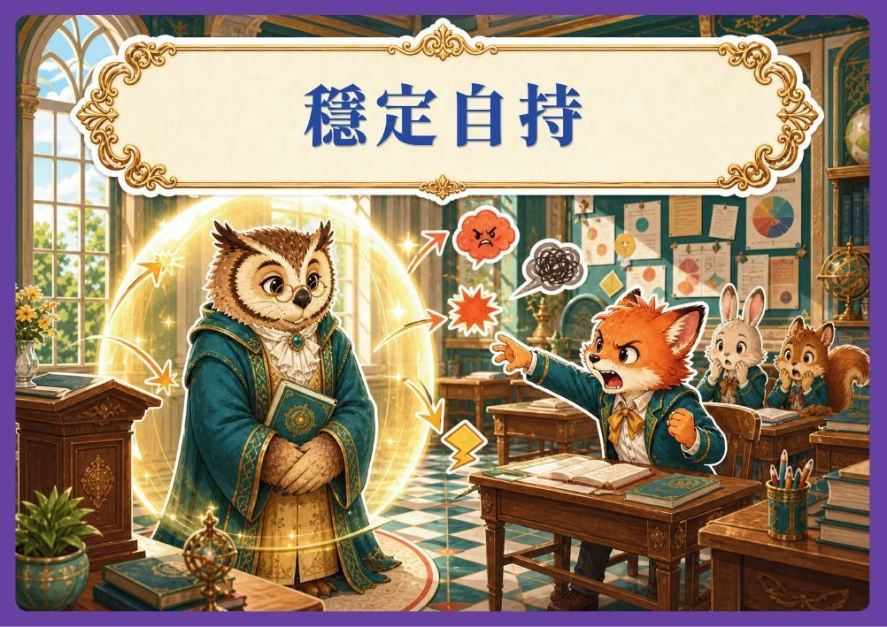
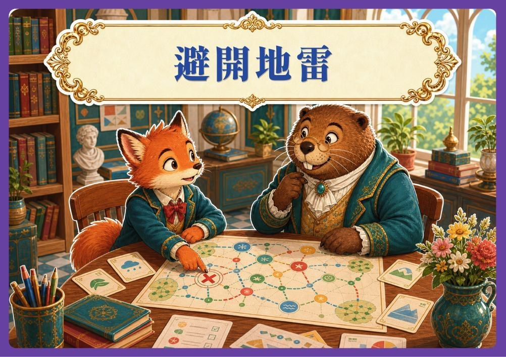
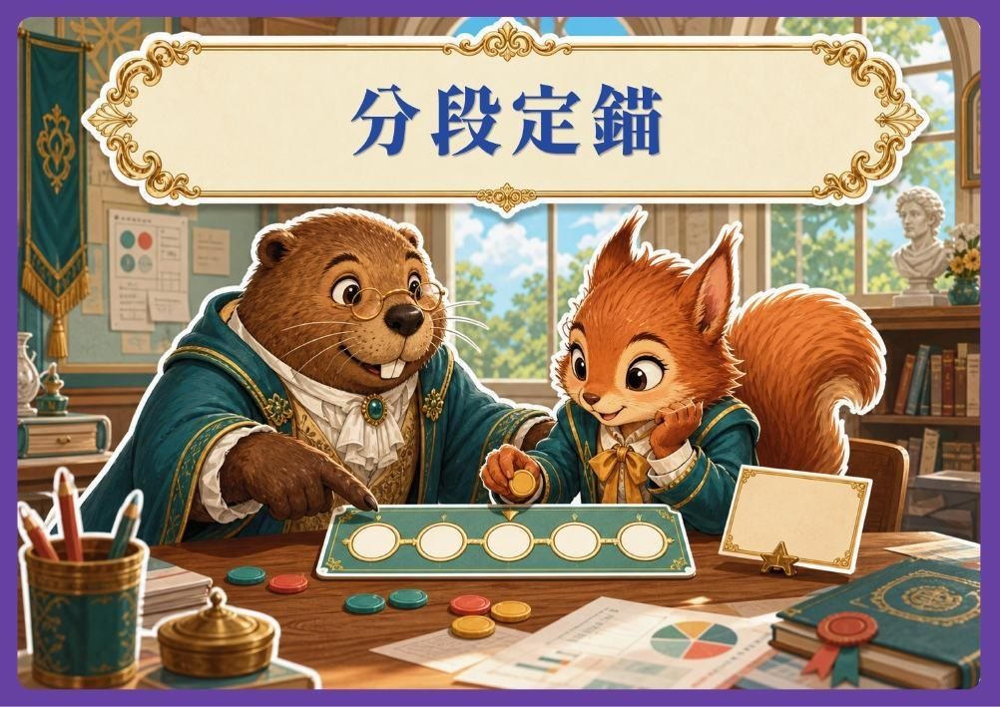
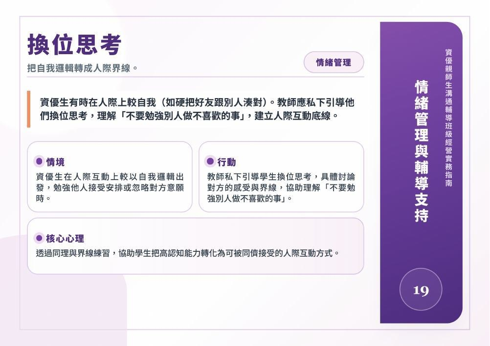
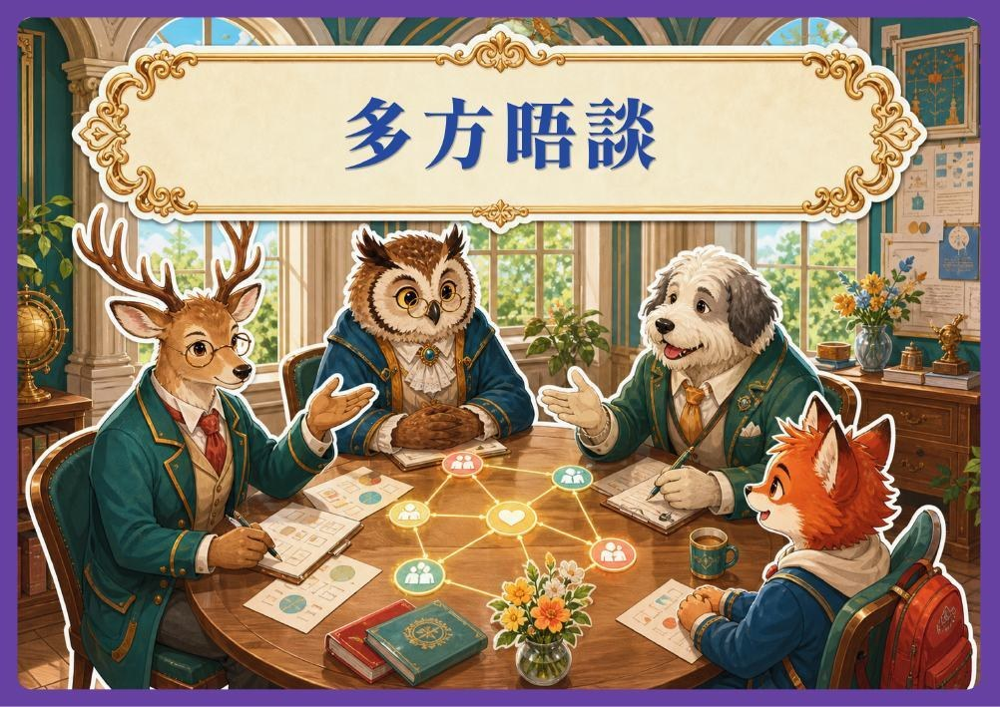

14PDF 第 36–37 頁
穩定自持
成人先穩住，環境才安全。
當資優生在課堂上情緒激昂或引爆嚴重衝突時，教師本身必須維持情緒穩定，絕不能跟著波動，讓學生感受到環境是安全且包容的。
情境
當資優生在課堂上情緒激昂或引爆嚴重衝突。
教師行動
教師產生自我覺察、延遲衝動反應並維持情緒的自我管理穩定。
核心心理
教師是學生的社會情緒行為示範者且可營造安全的氛圍與學生建立信任且安全的依附關係。
對照原文 · PDF 第 37 頁
查看牌卡插畫 · PDF 第 36 頁

CHAPTER 02 / 策略 14–25
先承接情緒，再支持學習
關注高敏感、完美主義與挫折反應。教師先穩定自己，再調整刺激、拆解目標與提供陪伴，並留意外在表現背後的負荷。
以下文字已逐張對照原頁校對；各牌卡仍可展開「對照原文」。
成人先穩住，環境才安全。
當資優生在課堂上情緒激昂或引爆嚴重衝突時，教師本身必須維持情緒穩定，絕不能跟著波動，讓學生感受到環境是安全且包容的。
當資優生在課堂上情緒激昂或引爆嚴重衝突。
教師產生自我覺察、延遲衝動反應並維持情緒的自我管理穩定。
教師是學生的社會情緒行為示範者且可營造安全的氛圍與學生建立信任且安全的依附關係。

先離開刺激源，再談修復。
當學生情緒崩潰時，教師應優先將其帶離引發衝突的現場，讓他們有一個可以安全發洩（如哭泣或生氣）的環境。
當資優生在課堂上情緒崩潰完全無法聽進任何話或自我控制時。
建立默契，允許他們到不被打擾不必顧慮他人眼光的友善空間緩解情緒。
提早釋放壓力閥，避免無彈性的環境引爆其壓力或衝突擴大。
先辨識爆炸開關。
教師必須清楚知道哪些事物會引發學生爆炸（例如不能喝水、筆不能放桌上等嚴格規定），並在日常互動中刻意避開這些地雷。
避開「爆炸開關」，例如不合邏輯的規範，像是不能喝水、筆不能放桌上等。
透過事先晤談或觀察提前辨識情緒地雷。
提供體制內的「合法緩衝」與「彈性替代案」，透過權變共存緩和彼此的挫敗感。

受挫可以被承接。
理解資優生承載極大壓力或追求完美，教師應引導資優生在受挫時（如做不出報告或比賽失常）可選擇大哭或其他宣洩壓力的行為。
資優生承載極大壓力或具有追求完美的特質。
協助學生設定逐步達成的標準或鼓勵積極嘗試。
能力需在挫折及嘗試中一步步養成。
把目標縮到立刻做得到。
針對有感官敏感或衝動控制困難的學生，設立極短期的目標，例如「五分鐘不發出怪聲就加一個圈」，透過立即增強協助管理行為。
感官或心理過度激動的資優學生在課堂中衝動控制困難。
設立極短期或立刻可達成的目標或提供視覺提示。
高頻增強及視覺提示可協助學生的行為管理及維持。

把自我邏輯轉成人際界線。
資優生有時在人際上較自我（如硬把好友跟別人湊對）。教師應私下引導他們換位思考，理解「不要勉強別人做不喜歡的事」，建立人際互動底線。
資優生在人際互動上較以自我邏輯出發，勉強他人接受安排或忽略對方意願時。
教師私下引導學生換位思考，具體討論對方的感受與界線，協助理解「不要勉強別人做不喜歡的事」。
透過同理與界線練習，協助學生把高認知能力轉化為可被同儕接受的人際互動方式。

從防衛失敗走向享受歷程。
教導害怕失敗而拒絕嘗試的資優生：「可以不相信自己，但必須做好接受失敗的準備」，讓他們認知到失敗是正常的過程。
資優生因腦中的藍圖與雙手實踐能力的非同步落差，深陷高標準雙面刃的內部焦慮與挫折進而害怕失敗與嘗試。
在歷程中陪伴與體驗，將焦點從看見結果到看見歷程。
教師要撐開一個容許失敗的空間，讓他們從「防禦失敗的防衛心態」，蛻變為「享受過程的真實完整」。
讓特殊興趣成為安定舞台。
接納他們談論特殊興趣，讓具備亞斯特質的學生在專屬的學科領域或資優班中盡情表達，獲得情緒安定與歸屬感。
欣賞他們對特殊興趣的滔滔不絕。
在專屬的學科領域或資優班中盡情表達，獲得情緒安定與歸屬感。
主動為學生「搭設舞台」，成為學生在學校裡最信任的「知音」。
多一點人，拉出死胡同。
當情緒陷入死胡同走不出來時，結合輔導室與資優老師，「多一點人」用正確觀念共同引導他走出情緒糾結。
資優生思維鑽入牛角尖，情緒陷入死胡同而孤立無援時。
串聯資優教師與輔導室，匯聚眾人專業與溫暖共同引導。
用愛與多重專業編織安全網，讓學生感受被群體特意守護。

看見自控背後的耗損。
理解具特殊生理特質的資優生，在考試時為了控制不當行為（如忍耐不發出怪聲）會耗費極大能量導致全身無力，需給予身心疲勞的彈性理解。
理解具特殊生理特質的資優生，因神經超載而全身虛脫。
教師理解其生理限制提供調整空間。
接納先天神經特異性帶來的隱形耗損，體恤其自控付出的代價。
先接住人，再談表現。
面對因壓力過大引發嚴重身心症狀（如壓力引發憂鬱）的資優生，教師應給予支持陪伴。
在資優生的在潛意識裡「不完美」等於「毀滅」或「失去價值」。
長期的、不帶學業要求的陪伴與理解他的崩潰。
這是「完美主義的重度反噬」，老師要幫孩子重新建構一個無條件且接納的世界。
原文註：原文為「在資優生的在潛意識裡」，含重複用字；按原文保留，未逕行改寫。
中斷負面迴路，避免舊恨添新仇。
部分資優生容易反覆糾結（如睡到半夜想起來又走不出來），需要引導他們切斷當下的負面情緒迴路，不讓舊恨引發新仇。
在深夜或特定時刻反覆反芻，思維卡在負面記憶中無法抽離。
引導學生運用具體策略切斷情緒慣性，阻止「舊恨引發新仇」的連鎖反應。
大腦的慣性需要刻意中斷，用當下的正念或理性工具為失控的思維即時止血。